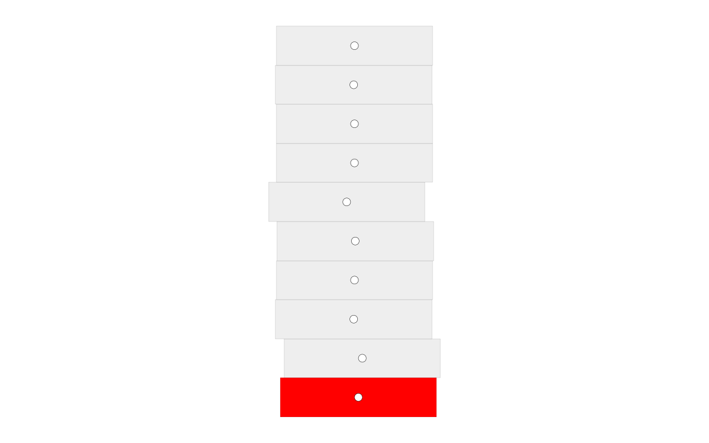

Generate geometry

import os
from math import pi
from math import radians
from compas.geometry import subtract_vectors
from compas.geometry import add_vectors
from compas.geometry import angle_vectors
from compas.geometry import scale_vector
from compas.geometry import Vector
from compas.geometry import transform_points
from compas_assembly.datastructures import Block
from compas_assembly.datastructures import Assembly
from compas_assembly.plotter import AssemblyPlotter
from compas.geometry import Rotation
try:
HERE = os.path.dirname(__file__)
except NameError:
HERE = os.getcwd()
DATA = os.path.join(HERE, '../../../data')
FILE = os.path.join(DATA, 'arch.json')
def arch_from_rise_and_span(height, span, depth, thickness, n):
"""Create a semicircular arch from rise and span.
Parameters
----------
height : float
...
span : float
Dimension of the span in meter measured at the impost level (intrados-intrados).
depth : float
Depth in meter of the arch perpendicular to the front view plane.
thickness : float
Thickness in meter of the arch.
n: int
number of voussoirs.
Returns
-------
Assembly
Data structure of the semicircular arch.
"""
assembly = Assembly()
if height > span / 2:
raise Exception("Not a semicircular arch.")
radius = height / 2 + (span**2 / (8 * height))
base = [0.0, 0.0, 0.0]
top = [0.0, 0.0, height]
left = [- span / 2, 0.0, 0.0]
center = [0.0, 0.0, height - radius]
vector = subtract_vectors(left, center)
springing = angle_vectors(vector, [-1.0, 0.0, 0.0])
sector = radians(180) - 2 * springing
angle = sector / n
a = top
b = add_vectors(top, [0, depth, 0])
c = add_vectors(top, [0, depth, thickness])
d = add_vectors(top, [0, 0, thickness])
R = Rotation.from_axis_and_angle([0, 1.0, 0], 0.5 * sector, center)
bottom = transform_points([a, b, c, d], R)
blocks = []
for i in range(n):
R = Rotation.from_axis_and_angle([0, 1.0, 0], -angle, center)
top = transform_points(bottom, R)
vertices = bottom + top
faces = [[0, 1, 2, 3], [7, 6, 5, 4], [3, 7, 4, 0], [6, 2, 1, 5], [7, 3, 2, 6], [5, 1, 0, 4]]
block = Block.from_vertices_and_faces(vertices, faces)
assembly.add_block(block)
bottom = top
assembly.node_attribute(0, 'is_support', True)
assembly.node_attribute(n - 1, 'is_support', True)
return assembly
# ==============================================================================
# Assembly
# ==============================================================================
height = 3
span = 10
depth = 0.7
thickness = 1
n = 40
assembly = arch_from_rise_and_span(height, span, depth, thickness, n)
# ==============================================================================
# Export
# ==============================================================================
assembly.to_json(FILE)
# ==============================================================================
# Visualize
# ==============================================================================
R = Rotation.from_axis_and_angle([1.0, 0, 0], -pi / 2, [0, 0, 0])
assembly.transform(R)
plotter = AssemblyPlotter(assembly, figsize=(16, 10), tight=True)
plotter.draw_nodes(radius=0.05)
plotter.draw_edges()
plotter.draw_blocks(facecolor={key: '#ff0000' for key in assembly.nodes_where({'is_support': True})})
plotter.show()